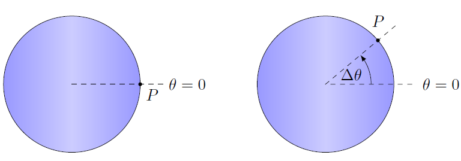
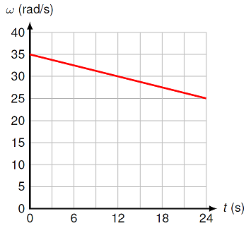
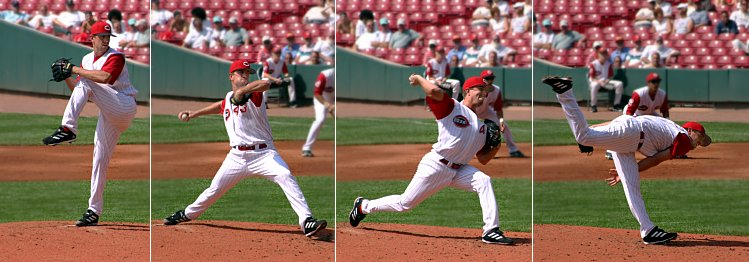

Rotational kinematics¶
Overview¶
In Lesson 05, we discussed the kinematic equations for linear motion. These describe the relationships between position, velocity, and acceleration, for an object moving with a constant linear acceleration. In other words, if an object is moving along a line, with a constant rate of change for the velocity, then the linear kinematic equations will tell you all about this motion.
We are now going to explore the version of this for circular motion. This could be something actually moving along a circular path – think of a car driving on a race track – or a rotating motion – such as a rock stuck in the treads of a tire. Note, by the way, that I will use the words “rotational” and “angular” fairly interchangeably, but if I were strict about it, the rock on the tire is a “rotation”, while the car is changing in angle, at least as seen by a person at the center of the track. In any case, for these two types of situation, there are angular versions of position, velocity, and acceleration.
There are also angular versions of the kinematic equations as well. In fact, we can go from the linear kinematic equations to the angular versions, simply by replacing each linear quantity with its angular partner. The reason for this is that we define angular velocity and acceleration pretty much the same way as we did linear velocity and acceleration. Thus, the angular kinematic equations can be built up from these basic definitions, much as was done in Lesson 05.
One way to think about this is to consider the angular motion as simply a line “wrapped in a circle”. In fact, one of the key ideas of this lesson is how to directly relate the angle an object rotates through, and the distance traveled by a point on the edge of this object. This will directly give a relationship between thinking of angles and rotation, versus thinking of moving along the circumference of a circle.
Here are the objectives for this lesson:
Define angular position, velocity, and acceleration.
State the corresponding angular kinematic equation for a given linear kinematic equation.
Calculate time, or angular position, velocity, or, acceleration using rotational kinematic equations.
Angular quantities and units¶
Before we get into the rotational kinematic equations, we need to define our basic quantities first. To start with, we will define the rotational versions of position and displacement. After we do this, we will need to consider what units to measure our angular quantities in. It turns out that there is a best choice of units, which we will talk about later.
Angle and angular displacement¶
Let’s go back to talking about the car driving around a circular track. What does an observer at the center of the track see? This person sees the car moving around the track with a changing angle, relative to a fixed angle (the “reference line” \(\theta = 0\)). This is a lot like the origin \({\vec r} = 0\) of a system of coordinates, but we are only considering motion along a circle. Then, the person at the track center sees the car at an angular position \(\theta\) at each instant of time.
Much like we defined a (linear) displacement \(\Delta {\vec r}\) as the change in position \({\vec r}\), we can also define an angular displacement \(\Delta \theta\), for the change in angle over the course of some motion:
Notice that, much like linear displacement, for angular displacement, we do not care how the motion was carried out, just what are the initial angle \(\theta_i\) and final angle \(\theta_f\).

Like angular momentum, the angular displacement is actually a vector. To see this, think about the rotation of an object. It will rotate in some flat plane, and we can define the vector \(\Delta {\vec \theta}\) to point perpendicular to this plane. We will not worry about this aspect of the angular displacement too much, but it can be important in some applications in engineering. However, the vector nature of \(\Delta {\vec \theta}\) does give us a convention for the signs: since we think of increasing angles when we travel around the unit circle in a counterclockwise direction, this will be the positive direction for \(\Delta \theta\), and negative will be in the clockwise direction.
Angular units¶
Now let’s talk about the units we will use for angular displacement. Remember that these units will “filter down” to give us the units for angular velocity, and angular acceleration, since we will define angular velocity in terms of angular displacement (much like we did for linear displacement and velocity). So what should we choose?
Imagine you have a circular object in rotation, and you want to compare the linear motion of a point on the edge of the circle to its angular motion. Starting at the reference point, the linear distance along the circle edge is known as the arc length \(s\). Hopefully it is obvious that if you double the angle \(\theta\), you double the arc length \(s\) along the circle (tangential to it), so the two are proportional. This is denoted by the equation
This means there is some constant \(k\), such that \(s = k \theta\). So what constant should we use?
Remember that one complete revolution of the circle, or one circumference \(C\) of arc length, is given in terms of the circle’s radius \(r\) by
Choosing a set of angular units is the same thing as deciding what number \(\Delta \theta\) we use to denote one revolution’s worth of angle. Since this must match one revolution’s worth of arc length, then by the proportionality between arc length and angle, we have
where “?” is the angle for one revolution. If we choose units such that \(\theta = 2 \pi\) when \(s = 2 \pi r\), the equation simplifies to
In other words, we have made the choice of proportionality constant \(k\) to be the radius of the circle. We call these units radians (abrbeviated “rad”). This gives us a nice interpretation of what a radian is: one radian is the angle for which the arc length is equal to the radius of the circle. Notice this simple equation only works when we make this choice!
Problem: Suppose instead you decide to use degrees, so that one circumference of the circle matches 360 degrees. What would the relationship between arc length \(s\) and angle \(\theta\) be then?
This is a natural set of units, so we will use it as our basic unit for all angular quantities. Thus, angular displacement is defined as
Quantity: angular displacement
Symbol: \(\Delta \theta\)
Equation: $\( \Delta \theta = \theta_f - \theta_i \)$
SI units: radians (rad)
Direction: CCW is positive, CW is negative
Problem: In a 75.0 minute class, what is the angular displacement of the minute hand on an analogue clock?
\(+1.25\) rad
\(+3.93\) rad
\(+7.85\) rad
\(+471\) rad
None of the above
Although radians will be our default units, other kinds of angular units will appear. For example, one revolution (rev) is one complete trip in a circle, so it is equivalent to \(2 \pi\) radians. Similarly, this is the same as an angular displacement of 360\(^\circ\).
The secret conversion factor: Remember above that I said that if you travel one radius along the edge of a circle with that radius, you have traveled through an angular displacement of one radian? It turns out that this is a good way to interpret the \(r\) factor that appears in the equation \(s = r \theta\). This is actually a conversion factor! In other words, in this equation, \(r\) has units of “length/radian”, so you can convert between angular displacement \(\theta\) and linear displacement \(s\). It is helpful to keep this in mind, since units of radians sometimes seem to “disappear” without reason. However, this is usually because there is a factor of the circle’s radius that is being used to convert angle to length, and vice versa!
Angular velocity and angular acceleration¶
Once we have angular displacement, we can define angular velocity as well; this is given by the symbol \(\omega\) (“omega”).
Quantity: angular velocity
Symbol: \(\omega\)
Equation: $\( {\vec \omega}_{av} = \frac{\Delta {\vec \theta}}{\Delta t} \)$
SI units: rad/s
Direction: CCW is positive, CW is negative.
As with linear velocity and speed, the angular speed is the magnitude of the angular velocity. In addition, a common non-SI unit of angular speed and velocity is “rpm”, which stands for revolutions per min (or rev/min).
The period \(T\) is the time to complete one revolution. Since one revolution is \(2 \pi\) radians, then
Solving for \(T\) gives
Problem: What is the angular speed of the Earth, as it rotates around its axis? Answer: \(7.27 \times 10^{-5}\) rad/s
Problem: The Earth orbits the Sun roughly in a circle once every 365.25 days. Because we are on a moving object, this means that the distant stars appear to move, according to an Earth-bound observer. For example, if you look at the positions of the stars at midnight every day, you will see the stars slowly moving in the night sky from your perspective.
What is the angular velocity (in mrad/day) of a star in the sky due to this orbital motion of the Earth? Answer: 17.2 mrad/day
Problem: The synodic period is the time it takes for a celestial object orbiting the Sun to reappear in the same location in the night sky, as seen from the Earth. The planet Venus sometimes is seen before the Sun rises (when the planet is called the “morning star”) and sometimes after the Sun sets (when it is the “evening star”).
Venus takes 224.7 days to orbit once around the Sun. Using the angular velocity you found in the last problem, calculate the length of the synodic period for Venus, in days. Hint: Think in terms of relative motion, and the fact that Venus appears to someone on Earth to have traveled once “around the sky”. Answer: 584 days
Similarly, we can define the angular acceleration \(\alpha\) (“alpha”) of an object as the rate of change in the angular velocity.
Quantity: angular acceleration
Symbol: \(\alpha\)
Equation: $\( {\vec \alpha}_{av} = \frac{\Delta {\vec \omega}}{\Delta t} \)$
SI units: rad/s\(^2\)
Direction: CCW is positive, CW is negative.
Problem: The graph below shows the rotation of a yo-yo as it “sleeps” (spins in place) at the end of its string. What is the magnitude (in mrad/s\(^2\)) of the angular acceleration? Answer: 417 mrad/s\(^2\)

Rotational kinematic equations¶
In physics, we typically will be dealing with situations where the angular acceleration is constant.
We can expand this:
Setting \(t_i\) = 0 and rearranging to solve for \(\omega_f\), we get:
This is our first rotational kinematic equation! Notice that this looks a lot like the linear kinematic equation
except that we have replaced the linear velocity \({\vec v}_f\) with the angular velocity \(\omega\), and the linear acceleration \({\vec a}\) with the angular acceleration \(\alpha\). We can use the same process to go from the other linear kinematic equations of Lesson 06 to those for angular motion:
Practice problems¶
Problem: When throwing a curveball, a pitcher gives the ball an initial angular speed of 42.0 rad/s. When the catcher gloves the ball 0.640 s later, the ball has gone through exactly 3.00 full rotations. What is the magnitude of the angular acceleration of the ball during its flight (assuming it is constant)? Answer: 39.2 rad/s\(^2\)

Problem: A wheel rotates about a fixed axis through its center with a constant angular acceleration of 4.00 rad/s\(^2\). In a certain 4.00 s time interval, the wheel turns through an angle of 80.0 rad.
What is the rotational velocity of the wheel at the start of the 4.00 s time interval? Answer: 12.0 rad/s
Assuming the wheel starts at rest, how long is it in motion at the start of the 4.00 s time interval? Answer: 3.00 s
Problem: The rotor in a centrifuge has an initial angular speed of 430 rad/s. After 8.20 s of constant angular acceleration, its angular speed has increased to 550 rad/s.
What is the magnitude of the angular acceleration for the rotor? Answer: 14.6 rad/s\(^2\)
What angle does the rotor turn through during this time? Answer: 4.02 krad
Problem: Aang, the Avatar, has been found guilty and told to spin the wheel of punishment.
He starts with the wheel on “boiled in oil” and gives it an initial angular velocity of \(-27.0\) rpm. If it slows down at a rate of 0.110 rad/s\(^2\), then where does the wheel stop? Give the punishment shown on the picture at the stopping point; these are given as (starting from the top, and going clockwise)
Boiled in oil
Bed of nails
Community service
Whipping post
Burned alive
Razor pit
Mauled by platypus bear
Eaten by shark
Answer: Community service
Summary¶
In Lesson 06, we derived the linear kinematic equations from the basic definitions of velocity and acceleration. These were then useful in describing the motion of an object. They were really helpful after we talked about Newton’s second law. Because of the laws of motion, we could find the acceleration of an object. Then, the linear kinematic equations could find the position and velocity of the object at any given time.
We now have the rotational version of the kinematics equations. In the next lesson, we will continue the same path we traveled for the linear case, and find the rotational version of Newton’s second law. This will allow us to calculate the angular displacement and velocity of a rotating object, starting from its angular acceleration. From Lesson 19, we have already talked briefly about torque, the rotational version of force. The sum of the torques on an object will determine the angular acceleration, as we will see in Lesson 22.
After this lesson, you should be able to:
State the SI units for angular displacement, velocity and acceleration.
Use the rotational kinematics equations to solve a problem with rotational or circular motion.